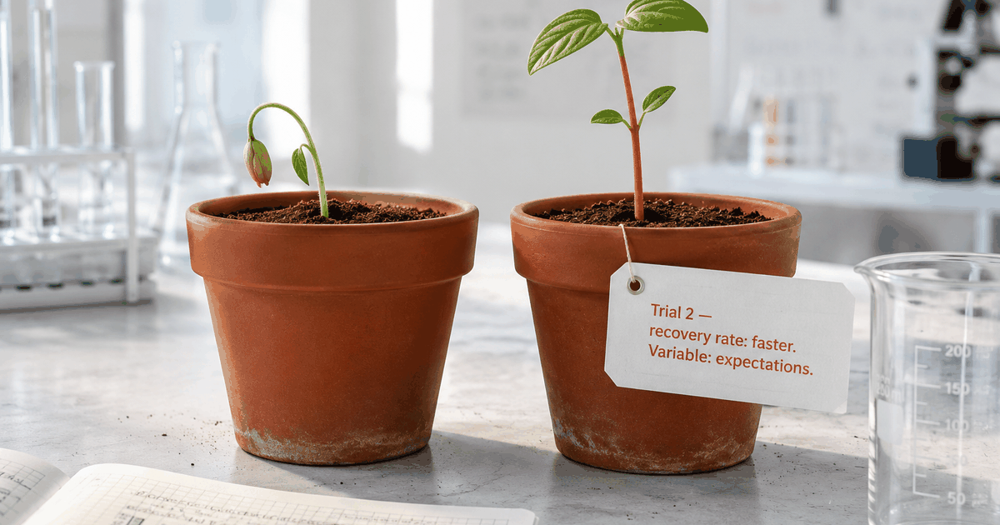

A 2023 PLOS ONE study tracking 606 fathers (roughly 500 first-time, 106 second-time) found that first-time dads experience a steeper, more sustained decline in relationship satisfaction through the first two years — while second-time dads recover by around 14 months. The reason isn't that their lives are easier. It's a specific difference in expectations that anyone can adopt right now.
The obvious assumption is that two kids is harder on a marriage than one. Double the sleep deprivation, double the chaos, double the logistics. So you'd expect second-time parents to struggle more.
Researchers at Technische Universität Dresden expected the same thing. Then they looked at the data.
Their 2023 PLOS ONE study, drawing on the DREAM cohort, tracked 606 fathers — around 500 having their first baby, 106 having their second — at four points in time: before the birth, at 8 weeks postpartum, at 14 months, and at 2 years. The finding reversed everything tidy about the assumption. First-time fathers kept declining through the first two years. Second-time fathers took a hit at 8 weeks — and then came back up.
The researchers' explanation for why cuts directly to what's happening in your relationship right now.
What the study actually found
First-time fathers show a steeper, more sustained decline in relationship satisfaction across the first two years postpartum. Second-time fathers show a dip and then recover lost satisfaction by around the time their second child is 14 months old. The difference the authors emphasize isn't workload or available time — it's expectations: second-timers already knew the first year would be hard on the relationship, so when it was, they didn't read it as failure.
is about when second-time fathers' relationship satisfaction recovers — while first-timers are still on a steeper, more sustained decline. Both groups took a hit; the group with prior experience bounced back.
To be clear: second-time parents have more to manage. They have a toddler and a newborn. They have less sleep, less space, more financial pressure. And still, the relationship recovery happened faster for them. Which points away from logistics as the driver — and toward something mental.
The expectation gap is the real culprit
The "expectation gap" is the distance between what couples expect the first year to feel like and what it actually feels like. When that gap is large — when you expected to stay close and you're instead feeling like strangers — the natural interpretation is: something is wrong with our relationship. When the gap is small — when you expected the first year to be hard — the same experience reads as: this is what we expected, and we're getting through it.
Second-time fathers had already lived the first year once. They knew the stretch where she seems to disappear into the baby. They knew the months when efficiency replaces intimacy and you both stop reaching. They knew it was temporary. So when it happened again, they didn't flinch.
First-time fathers had no map. They walked into the first year with the reasonable expectation that love and effort would be enough to stay close — and then found themselves six months in, feeling like roommates, with no idea whether this was normal or the beginning of something permanent. It's the same reason so many new dads end up unsure how to even tell their wife they feel lonely — they don't have language for a season no one warned them about.
"First-time fathers experience a steeper decline in relationship satisfaction in the first two years post-partum than second-time fathers, who appear to recover lost relationship satisfaction by the time their second child is 14 months."Mack, Brunke et al., PLOS ONE, 2023 — TU Dresden, Changes in Relationship Satisfaction in the Transition to Parenthood Among Fathers
The gap between "I expected this" and "I didn't expect this" turns the same six months of difficulty into completely different emotional experiences. One is navigable. The other feels like a verdict.
First-time vs. second-time: same year, different frame
The two groups faced a nearly identical year — the difference was interpretation, not circumstance. First-timers met the postpartum distance with no prior map and read it as a warning sign; second-timers met the same distance expecting it and read it as a known season. That single shift in framing is what tracks with the different satisfaction trajectories in the data.
| The first year with a baby | First-time fathers | Second-time fathers |
|---|---|---|
| Expectation going in | Love and effort will keep us close | The first year is hard on us — it passes |
| How the distance is read | Something is wrong with the relationship | This is the known hard part |
| Satisfaction trajectory | Steeper, sustained decline through ~2 years | Dip, then recovery by ~14 months |
The part nobody mentions about second-timers
There's something else in the picture that's easy to miss.
Second-time fathers don't just have lower expectations — they also talk about the difficulty differently. Because they've been through it, they have language for it. They can say to their partner: "I know this year is hard on us. I know we're in the thick of it. I know it passes." That naming, repeated, keeps the distance from becoming a verdict.
First-time fathers, suffering in silence about something they don't have words for, tend to do the opposite. The research on new-dad disconnection is consistent: many first-time fathers don't tell their partners they're feeling distant, because they don't want to add to her burden, and because they're not sure what they're feeling is real or valid — which is often just misreading a partner's attachment under exhaustion.
of couples report a significant decline in relationship satisfaction in the first three years after their first baby — yet most first-time fathers interpret their experience as uniquely broken rather than universally shared.
Sixty-seven percent of couples. Two-thirds. It's a pattern the Bogdan et al. 2022 meta-analysis of 145,139 people confirmed happens reliably, for both partners — and one that a 2009 eight-year prospective study (Doss et al.) found persists without some active repair. And still, most men experience their version of it as though they're the only ones — because the suffering is silent, and the suffering of others is silent too, so there's no visible data that this is normal until you go looking for it.
What this means for you
You can't go back and be a second-time father. But you can borrow the one mechanism that actually made the difference: close the expectation gap. Name the difficulty out loud — to yourself and to her — not as a complaint, but as a shared fact. "I know the first year is hard on us. I know we're in it. I know it passes." That sentence converts shared suffering from something threatening into something navigable.
This isn't therapy-speak. It's information transfer. You're updating her model of your internal state, and giving her a frame for what's happening between you, at a moment when she probably doesn't have the bandwidth to read your silence correctly. If you want a concrete map of what's coming, our month-by-month new-dad timeline lays out the season the way a second-timer already knows it.
Second-timers recovered faster not because they had more time or better logistics — but because they treated the hard stretch as expected, not as a verdict. The sentence that does this: "I know this year is hard on us. I know it passes." Said out loud, to her, in the first three months. Before the distance hardens into habit.
The couples who navigated the first year best — in this study and across the broader research — aren't the ones who avoided the hard part. They're the ones who named it together and kept one low-effort connection ritual alive through it. A five-minute daily check-in. One specific appreciation. The acknowledgment, repeated, that this is a season, not a destination. If the distance has already set in, here's how to reconnect with your wife after the baby without waiting for a big talk.
You already know the first year is hard. You're in it. What second-timers had that you can borrow right now is the frame that makes hard feel like navigation instead of failure. That's not a small thing. That's the whole thing.
Frequently asked questions
Does having a second baby get easier on the relationship?
Counterintuitively, yes — for relationship satisfaction. A 2023 PLOS ONE study tracking 606 fathers found that second-time fathers, despite managing more chaos, recovered relationship satisfaction faster than first-timers. First-time fathers showed a steeper, sustained decline through the first two years, while second-timers bounced back by around 14 months. The key difference wasn't workload — it was that second-timers had realistic expectations and didn't interpret the distance as a verdict.
Why do first-time parents struggle more in their relationship than second-time parents?
The main mechanism is the expectation gap. First-time parents often enter the postpartum year expecting to maintain the closeness they had before — and when that doesn't happen, they read the distance as evidence something is wrong. Second-time parents already know the first year is hard on the couple relationship, so when it is, they don't spiral. The facts are identical; the frame is different.
What do second-time parents do differently in their relationship?
Primarily, they name the difficulty out loud and don't treat it as a secret or a warning sign. They know from experience that the first year is hard on the couple — so when it's hard, they say "yes, this is the hard part" rather than "something is wrong with us." That naming converts shared difficulty from something threatening into something navigable. They also tend not to wait for the right mood — they rely on small, low-effort daily rituals instead of big conversations.
Is it normal for my relationship to be harder after the first baby than expected?
Yes, and the research is unambiguous. 67% of couples report a decline in relationship satisfaction in the first three years after the first baby (Shapiro, Gottman & Carrere, 2000), and a meta-analysis of 145,139 people confirmed the drop happens reliably, for both partners (Bogdan et al., 2022). The gap between what you expected and what's happening isn't evidence of a uniquely broken relationship — it's the universal experience of first-time parenthood.
How do second-time parents maintain their relationship better?
By treating the hard stretch as expected rather than alarming, naming it together ("I know this year is hard on us"), and keeping one low-stakes connection ritual alive through it. The couples who fare best aren't the ones who avoid the hard part — they're the ones who name it together and don't let the suffering go silent.

Co-founder & CPO of Regular; Prof. Dr. in AI and institute director at THWS Würzburg. Writes “The Science, decoded” — reading the primary research so every claim traces to a citable source.
About Regular — the relationship app for new dads, built by a small team of parents who needed it themselves. Small, science-backed moves with your partner, not big talks.
Keep readingThe new-dad timeline, month by month · How to reconnect with your wife after baby · How to tell your wife you feel lonely
This article is for information only. It isn't medical or psychological advice and isn't a substitute for professional care. If you or your partner may be experiencing postpartum depression, or you're in crisis, please find mental-health support in your country or contact your local emergency services.